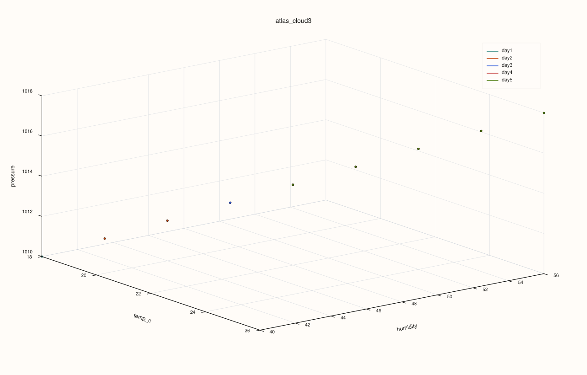

AtlasPlotAccessor::cloud3¶
Back to AtlasPlotAccessor API Reference
Signatures¶
AtlasPlotAccessor::cloud3(std::string_view x_feature, std::string_view y_feature, std::string_view z_feature) const -> pluss::pl::Studio
AtlasPlotAccessor::cloud3(std::string_view x_feature, std::string_view y_feature, std::string_view z_feature, const Scatter3DPlotOptions& options) const -> pluss::pl::Studio
What It Does¶
Draws one 3D scatter trace per selected frame in the stack: for each frame chosen
by options.depth_axis (every frame, by default, in ascending order), pulls
x_feature/y_feature/z_feature directly from that frame’s own rows (no
aggregation) and adds a flash::cloud3 trace to a single 3D pane, colored and
legend-labeled by that frame’s depth position (or depth_labels(), if set).
Important
Returns a Studio, not printable output
Every method on AtlasPlotAccessor builds and returns a pluss::pl::Studio — it has
no operator<<, so std::cout << chart does not compile. Call .show(),
.save_svg(path), .save_png(path), .save_pdf(path), .to_svg(), or .to_pdf()
to actually view or persist the figure. Every example on this page ends with a
.save_svg(...) call instead of a std::cout block.
Parameters¶
x_feature, y_feature, z_feature (std::string_view, all required)
The three numeric features supplying each row’s x/y/z coordinate. Must be
present, with a matching case count, in every frame selected by
options.depth_axis.
options (const Scatter3DPlotOptions&)
default_marker_size (floored at 1.0) sizes the points; scene/trace are the
shared Plot3DSceneOptions/Plot3DTraceOptions structs also used by
surface()/wireframe() (camera, theme, lighting,
shading, material — see DataFramePlot3DAccessor::line
for the full field breakdown, since both accessors share the same two structs).
Returns¶
pluss::pl::Studio
A figure with one 3D pane containing one scatter trace per selected frame.
Examples¶
Example 1. Overlay one scatter trace per frame in a 5-frame atlas, each frame’s points colored by its own depth position.
using namespace pluss::table;
std::vector<DataFrame> frames;
for (int i = 0; i < 5; ++i) {
double base = static_cast<double>(i);
frames.push_back(DataFrame({
{"temp_c", Thread(pluss::make_series({18.0 + base, 19.0 + base, 20.0 + base, 21.0 + base, 22.0 + base}))},
{"humidity", Thread(pluss::make_series({40.0 + base * 2, 42.0 + base * 2, 44.0 + base * 2, 46.0 + base * 2, 48.0 + base * 2}))},
{"pressure", Thread(pluss::make_series({1010.0 + base, 1011.0 + base, 1012.0 + base, 1013.0 + base, 1014.0 + base}))},
}));
}
auto atlas = Atlas(frames, Thread(pluss::make_note({"day1", "day2", "day3", "day4", "day5"})));
auto chart = atlas.plot().cloud3("temp_c", "humidity", "pressure");
chart.save_svg("cloud3_days.svg");
Each of the 5 frames (“day1” through “day5”) contributes its own 5-point cluster; since every feature increases with the frame index in this dataset, the 5 clusters form a diagonal progression through the cube rather than overlapping.

Notes¶
Points within a frame are not aggregated or connected — every row in every selected frame becomes its own point.
All three features must exist, with matching case counts, in every frame the depth axis selects — a missing feature or mismatched case count throws.
options.depth_axis(anAtlasDepthAxisOptions, shared withsurface()/depth()/etc.) controls which frames are included and in what order — see those pages fororder/stepdetails.
See Also¶
AtlasPlotAccessor::surface,AtlasPlotAccessor::wireframe: the other 3D methods sharing this accessor’sPlot3DSceneOptions/Plot3DTraceOptions, but building an aggregated grid instead of plotting raw points per frame.DataFramePlot3DAccessor::scatter: the single-frame 3D scatter this method generalizes across the stack.Atlas::plot: how to enter this accessor.